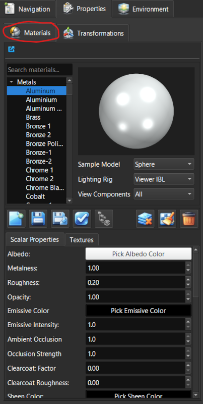
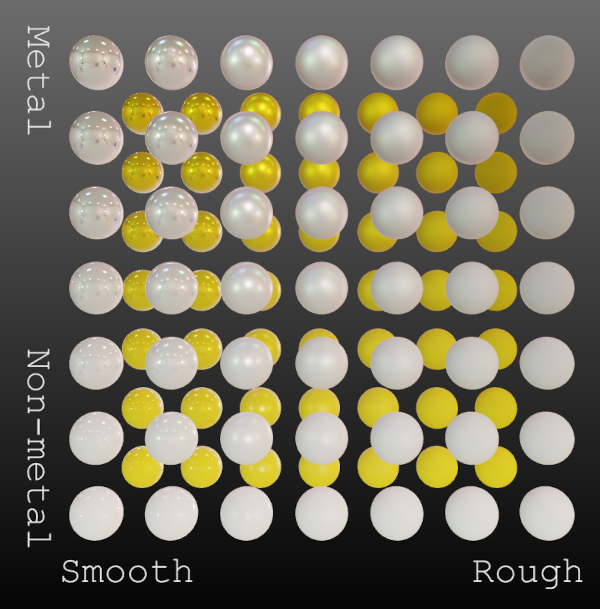
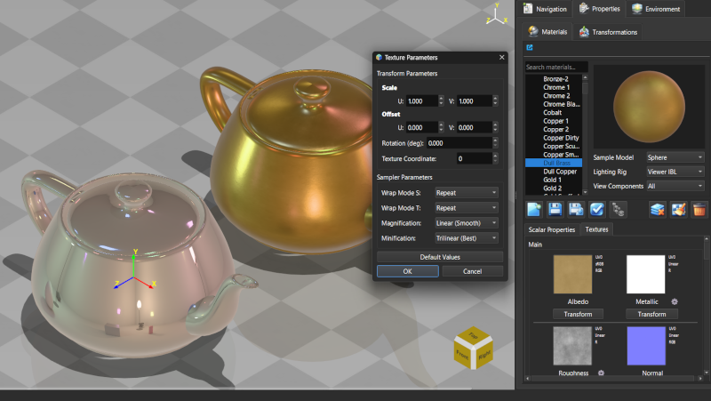
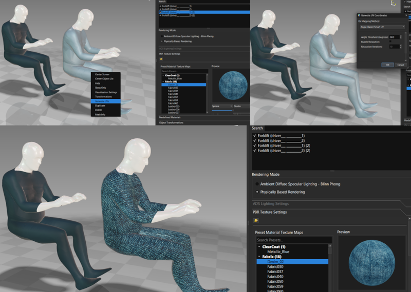

Lesson 9 of 18
Lesson 9: Materials & Textures
Introduction
ModelViewer authors materials using a single, physically-based (PBR) model — base color, metallic, roughness, and related properties. There is no separate 'ADS material' authoring workflow to switch between; every material is a PBR material.
You may still see 'ADS' elsewhere in ModelViewer — that's the Rendering Mode toggle (see Lesson 7 / the Quick Help dialog's Rendering & Display Modes tab), which shades your PBR material data using a classic Ambient-Diffuse-Specular lighting model instead of full PBR lighting. It's an alternate way to light the same material, not a different kind of material to author.
Material Editor
Access the material editor from the right panel:
Step 1: Select Objects
Select one or more objects to apply materials to.
Step 2: Open Materials Tab
Click the 'Materials' tab in the right panel. Material and texture editing are combined in this one panel.

Materials panel showing PBR propertiesPBR Material Properties
Physically-based properties for realistic rendering:
Step 1: Base Color/Albedo
The surface color without lighting effects.
Step 2: Metallic
0.0 = non-metal (dielectric), 1.0 = pure metal. Controls how light reflects.
Step 3: Roughness
0.0 = perfectly smooth mirror, 1.0 = completely rough/matte.
Step 4: Ambient Occlusion (AO)
Simulates shadows in crevices and corners. Usually from a texture map.

Spheres showing different metallic and roughness values in a gridApplying Textures
Add image-based detail to surfaces, from the same Materials panel used above:
Step 1: Load Texture Images
Click 'Browse' buttons to select texture files (PNG, JPG, TGA, etc.) for different maps.
Step 2: Texture Types
• Albedo/Base Color map
• Normal map - surface detail
• Metallic map
• Roughness map
• Ambient Occlusion (AO) map
• Height map
• Normal map - surface detail
• Metallic map
• Roughness map
• Ambient Occlusion (AO) map
• Height map
Step 3: Apply Textures
Click 'Apply' to apply loaded textures to selected objects.

Texture mapping panel showing different texture slotsGenerating UV Coordinates
Some models don't have UV coordinates (required for textures):
Step 1: Select Objects
Select objects that need UV coordinates.
Step 2: Generate UVs
Right-click → 'Generate UVs' to automatically create texture coordinates.
UV generation uses various algorithms. Results vary depending on geometry. You may need to use external 3D software for complex UV unwrapping.

Object before and after UV generation with texture appliedMaterial Presets
Quick starting points:
- Plastic: Low metallic (0.0), medium roughness (0.4-0.6)
- Metal: High metallic (0.9-1.0), low roughness (0.1-0.3)
- Wood: Low metallic (0.0), high roughness (0.7-0.9)
- Glass: Low metallic, very low roughness, enable transmission